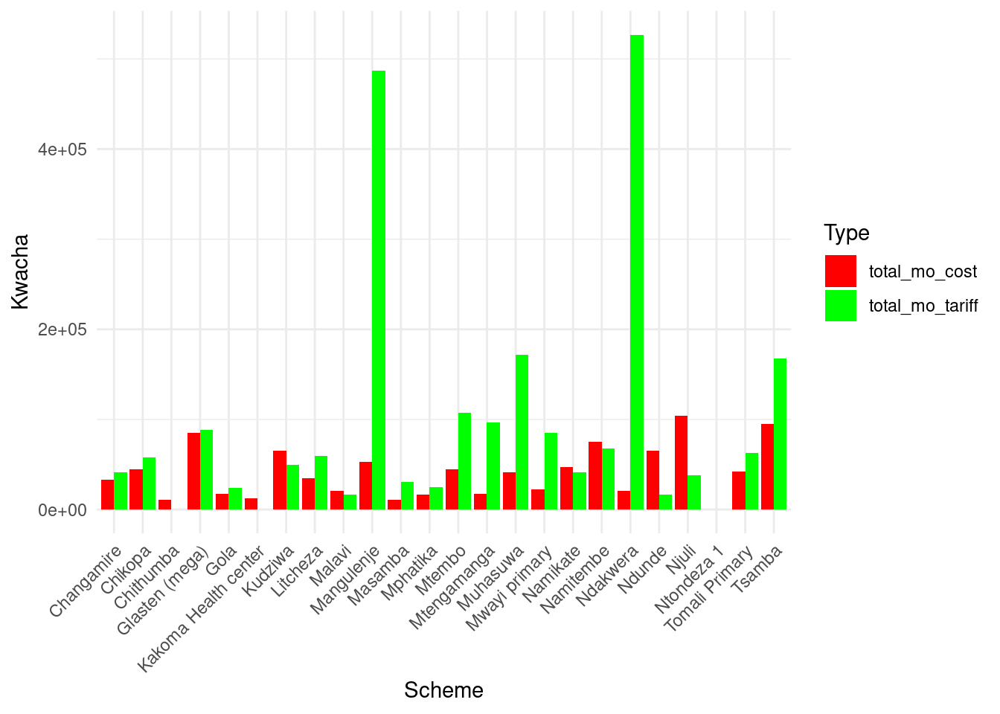
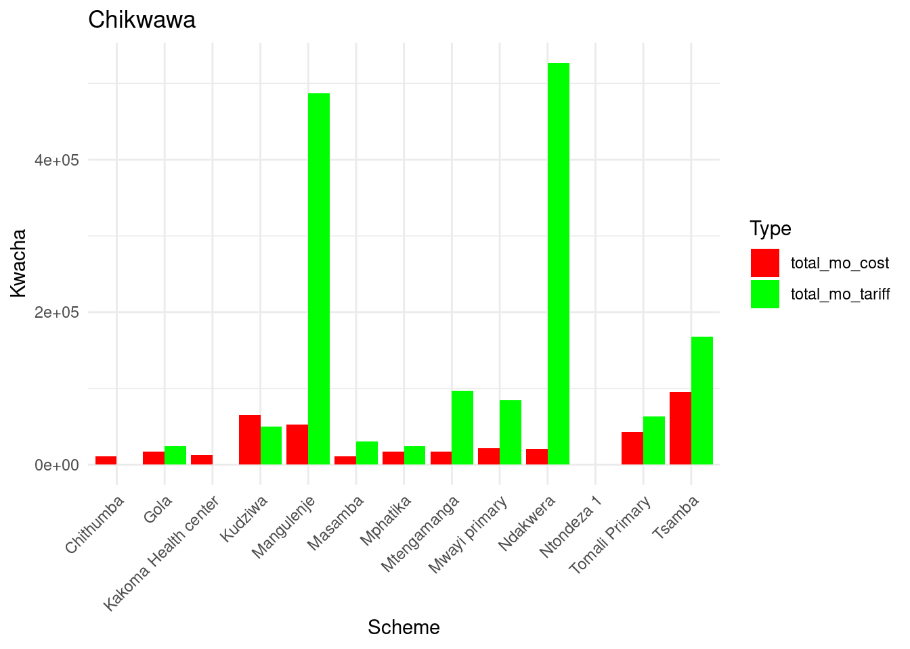
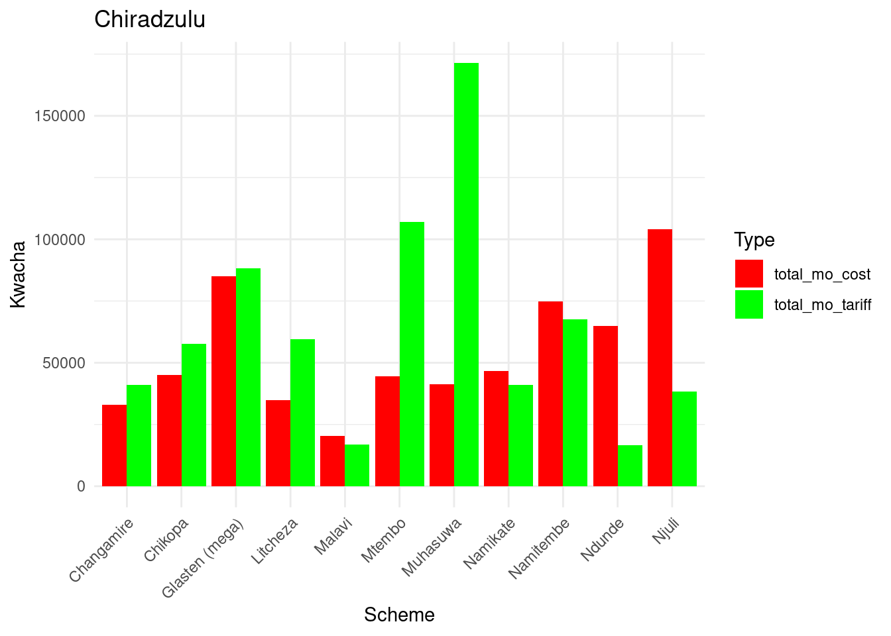

I am in Blantyre, Malawi, working with Water For People (WFP) - Malawi to collect data on their rural piped water schemes. WFP has built many piped water schemes for rural communities, either from scratch or by upgrading an existing handpump borehole. Once the scheme is handed over to the community, the community is responsible for keeping the system running, encouraging ownership and sustainability, but some schemes have been struggling to finance their own repairs.
I have been surveying these rural water scheme committees, collecting data on the costs they incur for keeping their water systems running and the monthly revenue they collect via tariffs. By comparing the costs and revenue generated by the schemes, we aim to try and identify the best practices in the rural water sector. The goal is to determine the gaps between costs and revenue, identify any trends between revenue collection and scheme success, and provide stakeholders with the results to encourage data-based decision making. Identifying these trends will help law makers and scheme committees to implement best practices to encourage sustainability of these rural schemes.
My data set will have quantitative data regarding costs of CapEx, CapManEx, and OpEx, quantitative data regarding tariff revenue generated, qualitative data regarding tariff collection methods, and qualitative data regarding scheme sustainability and productivity.
Methods
Reading the Data
# Load packageslibrary(tidyverse)
── Attaching core tidyverse packages ──────────────────────── tidyverse 2.0.0 ──
✔ dplyr 1.1.4 ✔ readr 2.1.5
✔ forcats 1.0.0 ✔ stringr 1.5.1
✔ ggplot2 3.5.2 ✔ tibble 3.2.1
✔ lubridate 1.9.4 ✔ tidyr 1.3.1
✔ purrr 1.0.4
── Conflicts ────────────────────────────────────────── tidyverse_conflicts() ──
✖ dplyr::filter() masks stats::filter()
✖ dplyr::lag() masks stats::lag()
ℹ Use the conflicted package (<http://conflicted.r-lib.org/>) to force all conflicts to become errors
New names:
Rows: 35 Columns: 144
── Column specification
──────────────────────────────────────────────────────── Delimiter: "," chr
(104): What is the name of the scheme you are currently visiting? (1), ... dbl
(12): Number of Rejections, Number of Edits, How many total households... lgl
(27): Auto Generated, Approval Level, Personal Info, Read the consent ... date
(1): When was the scheme finished being built?...3
ℹ Use `spec()` to retrieve the full column specification for this data. ℹ
Specify the column types or set `show_col_types = FALSE` to quiet this message.
• `When was the scheme finished being built?` -> `When was the scheme finished
being built?...3`
• `When was the scheme finished being built?` -> `When was the scheme finished
being built?...30`
• `` -> `...142`
• `` -> `...143`
• `` -> `...144`
Data Exploration Approach
The survey used for data collection was designed by myself in partnership with WFP. Due to resource allocation and a language barrier between myself and the rural communities, we relied on local workers employed by the government to collect the majority of this data. These workers are called “Water Monitoring Assistants”, or “WMAs”, and they oversee water access infrastructure in these rural areas.
WFP and myself hosted a training session with the WMAs to explain the purpose of this study and to teach them how to go about delivering this survey to the water scheme committees. Fuel was then provided for the WMAs by WFP and they were sent out to their respective areas.
Initial Data Tidying
With myself being several degrees removed from the raw data we are collecting, many of the survey responses needed some cleaning up before I was able to start analyzing.
Initial data tidying outside of posit.cloud consisted heavily of fixing obvious data entry errors, addressing inconsistencies or questions left blank, and creating useful data out of response discrepancies.
Some questions were often skipped over or answered partially. Some of the data received was contradictory and needed follow-up outreach for clarification. Some responses were difficult to decipher due to the language barrier. Surveys with these issues were rejected and sent back to the corresponding WMA for re-submission, along with a direct follow-up with the WMAs.
The resulting tidied data set was then uploaded to the data/raw folder for further data tidying and analysis.
Results
Initial Data Exploration
#Few initial functions I sometimes used to observe the data in posit.cloud#head(raw_data)#dim(raw_data)#spec(raw_data)#colnames(raw_data)
I started my initial data tidying within posit.cloud by selecting the data I wanted to work with, renaming the variables to something more user freindly for coding, and cleaning up some of the scheme names for cleaner looking outputs.
# Select only the desired columnsfiltered_data <- raw_data |>select(# General Info"What is your full name?","District","What is the name of the scheme you are currently visiting?",# Misc"How many total households does this scheme service? (HH)","When was the scheme finished being built?...3","How much total water can they hold? (liters)","What is the average household monthly income in this village? (kwacha)",# CapManEx"ADDED: Total CapManEx costs (Kwacha)",# OpEx"ADDED: Are guards stationed at the scheme by the scheme committee?","ADDED: If yes, how much are they paid in total? (kwacha)","ADDED: Do they consistently use chlorine?","ADDED: average monthly minor repair costs","ADDED: Is the tank ever cleaned?","ADDED: What additional monthly costs does the cleaning incur?",# Tariff Revenue"What percent of users regularly pay the tariffs? (%)","ADDED: What percent can pay but don't want to?","ADDED: What percent can't pay?","How are tariffs collected?","How many communal taps are there?","ADDED: Communal tap monthly rate","How many private household taps are there?","ADDED: What is the monthly private household connection rate? (monthly kwacha)","How many Public Institution taps are there? Ex) school or healthcare facility","ADDED: Public Institution monthly contribution","How much is currently in your bank account? (kwacha)","How much do you have in cash? (kwacha)",# Concluding Questions"ADDED: Is the scheme able to finance its own repairs?","ADDED: Do the tanks ever go empty?","ADDED: Did the scheme committee mention the need for better community engagement or more trainings?" )# Delete empty rowsfiltered_data <- filtered_data[-c(25:35), ]
# Save the original column names encase I want to view them latercollumns <-colnames(filtered_data)# Rename columns for easier codingfiltered_data_renamed <- filtered_data |>rename(name ="What is the name of the scheme you are currently visiting?",HH ="How many total households does this scheme service? (HH)",HH_monthly_income ="What is the average household monthly income in this village? (kwacha)",date_finished ="When was the scheme finished being built?...3", water_volume ="How much total water can they hold? (liters)",CapManEx_cost ="ADDED: Total CapManEx costs (Kwacha)",guard ="ADDED: Are guards stationed at the scheme by the scheme committee?", guard_mo_cost ="ADDED: If yes, how much are they paid in total? (kwacha)",cl ="ADDED: Do they consistently use chlorine?",tank_cleaned ="ADDED: Is the tank ever cleaned?",tank_cleaned_cost ="ADDED: What additional monthly costs does the cleaning incur?",per_reg_pay ="What percent of users regularly pay the tariffs? (%)",per_wont_pay ="ADDED: What percent can pay but don't want to?",per_cant_pay ="ADDED: What percent can't pay?",comm_taps ="How many communal taps are there?",comm_tap_rate ="ADDED: Communal tap monthly rate",HH_taps ="How many private household taps are there?",HH_tap_rate ="ADDED: What is the monthly private household connection rate? (monthly kwacha)",PI_taps ="How many Public Institution taps are there? Ex) school or healthcare facility",PI_mo_rate ="ADDED: Public Institution monthly contribution",bank_account ="How much is currently in your bank account? (kwacha)",cash ="How much do you have in cash? (kwacha)",finance_own_repairs ="ADDED: Is the scheme able to finance its own repairs?",tanks_empty ="ADDED: Do the tanks ever go empty?",want_trainings ="ADDED: Did the scheme committee mention the need for better community engagement or more trainings?",minor_repair_mo_cost ="ADDED: average monthly minor repair costs", )# Save the renamed column names for ease of viewing as I move forwardcollumns_renamed =colnames(filtered_data_renamed)
# Rename some of the schemes to make later outputs more visually appealingfiltered_data_renamed <- filtered_data_renamed %>%mutate(name =case_when( name =="Glasten scheme"~"Glasten (mega)", name =="Njuli water scheme"~"Njuli", name =="Kudziwa Scheme"~"Kudziwa", name =="Ndunde water scheme"~"Ndunde", name =="Malavi scheme"~"Malavi", name =="Chikopa scheme"~"Chikopa", name =="Muhasuwa water scheme"~"Muhasuwa", name =="Ndakwera community"~"Ndakwera", name =="Mwayi primary water scheme"~"Mwayi primary", name =="Mphatika Water system"~"Mphatika", name =="Tomali Primary School Scheme"~"Tomali Primary", name =="Mangulenje Water Scheme"~"Mangulenje",TRUE~ name # keep all other names unchanged ) )
Now that I have isolated the data I want to work with, I need to make sure my variables are in the right format for analysis. Next, I changed my quantitative data into numerical variables and separate the data by district.
# Changing the necessary data into numerical for calculationsfiltered_data_renamed <- filtered_data_renamed |>mutate(across(c(HH, HH_monthly_income, water_volume, CapManEx_cost, guard_mo_cost, per_reg_pay, per_wont_pay, per_cant_pay, comm_taps, comm_tap_rate, HH_taps, HH_tap_rate, PI_mo_rate, bank_account, cash, minor_repair_mo_cost), as.numeric ))
Warning: There were 10 warnings in `mutate()`.
The first warning was:
ℹ In argument: `across(...)`.
Caused by warning:
! NAs introduced by coercion
ℹ Run `dplyr::last_dplyr_warnings()` to see the 9 remaining warnings.
Now the data is cleaned up and saved in the filtered_data_renamed object.
Next, we want to start our initial analysis by creating some of the variables we will be working with and doing some initial visualizations. We want to calculate total monthly CapManEx costs, total monthly OpEx costs, and total monthly revenue for each scheme.
## CAPMANEX ### Need to start by calc the total months that have passed since completionlibrary(lubridate)filtered_data_renamed <- filtered_data_renamed |>mutate(mo_since_built =interval(ymd(date_finished), today()) %/%months(1) )# Now I want to calculate the monthly CapManEx costsfiltered_data_renamed <- filtered_data_renamed |>mutate(CapManEx_mo_cost = CapManEx_cost / mo_since_built )## OPEX ### First we need to create a new column for chlorine costs because most of the data on chlorine use was deemed not useablefiltered_data_renamed <- filtered_data_renamed |>mutate(cl_mo_cost =if_else(cl %in%c("yes", "Yes"), 12500, NA_real_) )# Now I want to calc total monthly OpEx costs by adding the cost of the guards, minor repairs, and chlorinefiltered_data_renamed <- filtered_data_renamed |>mutate(OpEx_mo_cost =rowSums(across(c(guard_mo_cost, minor_repair_mo_cost, cl_mo_cost)), na.rm =TRUE) )## TOTAL COST ### Now I want to add CapManEx and OpEx to get the total monthly costfiltered_data_renamed <- filtered_data_renamed %>%mutate(total_mo_cost =rowSums(across(c(CapManEx_mo_cost, OpEx_mo_cost)), na.rm =TRUE) )## TARIFF COLLECTION ### Calc revenue collected by communal tapsfiltered_data_renamed <- filtered_data_renamed |>mutate(comm_mo_tariff = HH * per_reg_pay /100* comm_tap_rate )# Calc revenue collected by household private tapsfiltered_data_renamed <- filtered_data_renamed |>mutate(HH_mo_tariff = HH_taps * HH_tap_rate )# Add up communal, private household, and Public Institution incomes for total monthly incomefiltered_data_renamed <- filtered_data_renamed |>mutate(total_mo_tariff =rowSums(across(c(comm_mo_tariff, HH_mo_tariff, PI_mo_rate)), na.rm =TRUE) )# Divide the data by district and save into my processed data folderChikwawa <- filtered_data_renamed |>filter(District =="Chikwawa")Chiradzulu <- filtered_data_renamed |>filter(District =="Chiradzulu")# Save the dataframes as CSV filesreadr::write_csv(Chikwawa, here::here("data", "processed", "Chikwawa.csv"))readr::write_csv(Chiradzulu, here::here("data", "processed", "Chiradzulu.csv"))readr::write_csv(filtered_data_renamed, here::here("data", "processed", "filtered_data_renamed.csv"))
Now we have the total monthly costs saved in total_mo_cost and total monthly revenue collected saved in total_mo_tariff for each scheme. The data has also been separated by district and saved into the data/processed folder under the Chikwawa and Chiradzulu objects for future ease of use.
Now I want to display the desired updated data in tables, one for all the data and one for each district.
### This data is skewed due to some outliers - I will have to go back and edit in the original data set ###
I want a better visualization of how the cost and revenue compare to assess how the schemes are performing. We will make one graph for all the data, then one graph for each district.
## ALL SCHEMES ### Reshape data to long formatplot_data <- filtered_data_renamed %>%select(name, total_mo_cost, total_mo_tariff) %>%pivot_longer(cols =c(total_mo_cost, total_mo_tariff),names_to ="type",values_to ="kwacha")# Create the double bar graphggplot(plot_data, aes(x = name, y = kwacha, fill = type)) +geom_bar(stat ="identity", position ="dodge") +scale_fill_manual(values =c("total_mo_cost"="red","total_mo_tariff"="green" )) +labs(x ="Scheme", y ="Kwacha", fill ="Type") +theme_minimal() +theme(axis.text.x =element_text(angle =45, hjust =1) )

## Chikwawa ### Reshape data to long formatplot_data_Chikwawa <- Chikwawa |>select(name, total_mo_cost, total_mo_tariff) |>pivot_longer(cols =c(total_mo_cost, total_mo_tariff),names_to ="type",values_to ="kwacha")# Create the double bar graphggplot(plot_data_Chikwawa, aes(x = name, y = kwacha, fill = type)) +geom_bar(stat ="identity", position ="dodge") +scale_fill_manual(values =c("total_mo_cost"="red","total_mo_tariff"="green" )) +labs(x ="Scheme", y ="Kwacha", fill ="Type", title ="Chikwawa") +theme_minimal() +theme(axis.text.x =element_text(angle =45, hjust =1) )

## Chiradzulu ### Reshape data to long formatplot_data_Chiradzulu <- Chiradzulu |>select(name, total_mo_cost, total_mo_tariff) |>pivot_longer(cols =c(total_mo_cost, total_mo_tariff),names_to ="type",values_to ="kwacha")# Create the double bar graphggplot(plot_data_Chiradzulu, aes(x = name, y = kwacha, fill = type)) +geom_bar(stat ="identity", position ="dodge") +scale_fill_manual(values =c("total_mo_cost"="red","total_mo_tariff"="green" )) +labs(x ="Scheme", y ="Kwacha", fill ="Type", title ="Chiradzulu") +theme_minimal() +theme(axis.text.x =element_text(angle =45, hjust =1) )

[This will be the core of your analysis with specific requirements]
![]()